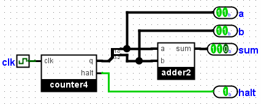

命令行验证
子章节：
替换库
其他验证选项
测试多个文件
测试向量
Logisim 对从命令行执行电路提供了基本支持。这既可用于脚本化验证电路设计，也可帮助教师自动测试学生提交的解答。
本节首先介绍如何从命令行执行电路。示例假设下面的电路已保存在名为 adder-test.circ 的文件中。它使用一个两位加法器作为子电路，并通过计数器遍历全部 16 种可能的输入组合。

构建好电路后，从命令行执行 Logisim，传入项目文件名，并为 -tty 选项指定 table 参数。
java -jar logisim-filename.jar adder-test.circ -tty table
Logisim 不会打开任何窗口，而是加载电路并开始执行；它会尽可能快地触发时钟，并在每个 tick 之间完成值传播。每次传播完成后，Logisim 会读取输出引脚的当前值；如果有任何值相较上一次传播发生变化，就以制表符分隔的格式显示所有输出值。如果某个输出引脚标有特殊名称 halt（区分大小写），该引脚的输出不会显示；但一旦传播完成后它的值变为 1，Logisim 就会结束仿真。
在这个示例中，Logisim 显示下表。前两个输出引脚对应两位加法器的输入 a 和 b，因此它们构成输出的前两列；另一个输出引脚 sum 对应两位加法器的输出，因此位于第三列。输出列从左到右排列，顺序由电路中输出引脚从上到下的位置决定。
00 00 000 01 00 001 10 00 010 11 00 011 00 01 001 01 01 010 10 01 011 11 01 100 00 10 010 01 10 011 10 10 100 11 10 101 00 11 011 01 11 100 10 11 101 11 11 110
下一节： 替换库。